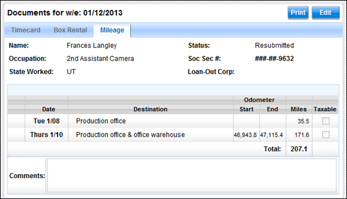

Click on the Payroll tab to access the production's electronic timecards. Clicking on this tab presents you with a list of your timecards. You can also get to this screen by clicking on the Timecard sub-tab below the Payroll tab.
Timecards are created automatically for all crew members who have current, active start forms (accessible via the Cast & Crew tab).
However, in the event you need to manually create a timecard you may do so by clicking on the Create button above the timecard list. You may need to manually create a timecard if a person's timecard has not yet been created automatically or if you wish to issue an Adjusted timecard.
The following fields are present in the timecard list. You may sort the list by any of these columns.
· Week Ending: The week ending date for the timecard.
· Hours: The number of hours reported on the timecard.
· Status: The status of the timecard (i.e. Submitted, Approved, etc.).
Select a timecard from the list to view it onscreen.
A timecard may be viewed by the following people:
· The employee on the timecard
· Approvers who review and sign the employee's timecard
· Best Boys or others in the department who are permitted to complete timecards on the employee's behalf
· Anyone else specifically granted permission to view or edit timecards
Lightspeed offers two timecards views - a Basic Timecard and a Full Timecard. By default you are shown the basic view.
Basic Timecard View
The basic view contains a timecard list on the left and a view of submitted hours and comments on the right. You may switch between the Basic and Full views by clicking on the View Full or View Basic button above the submitted hours portion of the timecard.
The basic timecard view contains three mini-tabs: Timecard, Box Rental, and Mileage.
The following fields are present in the timecard in the basic view:
Timecard Header:
·
Week
Ending: The week ending date for the timecard.
·
Name: The
name of the employee.
·
Occupation:
The employee's occupation.
·
State
Worked: The state in which the work was performed.
·
Status: The
status of the timecard (i.e. Submitted, Approved, etc.).
· Soc. Sec. #: The employee's Social Security number. This number is masked so that only a portion of the number is displayed.
·
Loan-Out
Corp.: The Loan-Out Corporation of the employee, if applicable.
Basic Timecard with Header and Hours
Submitted Hours Table:
The submitted hours table displays the hours worked for each of the seven days of the work week.
· Date: The weekday and date for each day of the week.
· Day Type: The day type identifier for the employee's work day. (i.e. Studio, Distant, Sick, Off, etc.).
· NDB/NDM: A check indicates that the day's Non-Deductible Breakfast and/or Meal was taken.
· Call: The employee's call time, or work start time.
· Meal 1 Out: The time the employee started the first meal.
· Meal 1 In: The time the employee completed the first meal.
· Meal 2 Out: The time the employee started the second meal.
· Meal 2 In: The time the employee completed the second meal.
· Wrap: The employee's wrap time for the day, or work end time.
· Hours: The number of hours the employee worked per day.
· MP: The number of meal penalty violations, if any, reported by the employee.
· Re-Rate: A check indicates that the employee is reporting that they worked an occupation different from their typical role, and therefore may need to receive a different rate for that work.
· Set: If applicable, the set number on which the employee worked
·
Comments:
Comments entered by the employee or approvers. These comments can be viewed by anyone who is
able to view the timecard.
·
Mileage:
The number of allowable or taxable miles reported.
·
Box Rental:
If a box rental form has been created, the box rental amount displays to the
right of the Mileage section.
The following fields are present in the box rental form in the basic view:
Basic Box Rental View
·
Amount:
The total amount for the weekly box or kit rental.
·
Inventory
is on file: Check this if the rental inventory is on file at the production
office.
·
Inventory:
List the inventory for the rental here.
· Comments: Enter any comments regarding the rental.
The following fields are present in the mileage form in the basic view:
Basic Mileage Form View

·
Date:
The date for the mileage entry.
·
Destination:
The destination driven to or from.
·
Odometer
Start/End: Optionally, input your car's odometer start and end mileage
amounts. The total miles will be
computed for you.
·
Taxable:
Check this field if the mileage is taxable.
· Comments: Enter any comments regarding the mileage form.
The full timecard view contains the same three mini-tabs: Timecard, Box Rental, and Mileage.
The timecard screen contains a great deal of information. The full view contains all timecard details including expenses, reimbursements, jobs, a pay breakdown, and electronic signatures.
The following diagram identifies the different sections of the timecard in the full view:
Sections of the Full Timecard View
The following information is contained in each section:
Timecard Header:
·
Week
Ending: The week ending date for the timecard.
·
Name: The
name of the employee.
·
Status: The
status of the timecard (i.e. Submitted, Approved, etc.).
·
Production
Name: The title of the production.
·
Production
Company: The name of the production company.
·
Occupation:
The employee's occupation.
·
Occ.
Code: The occupation code for the employee.
·
·
Loan-Out
Corp.: The Loan-Out Corporation of the employee, if applicable.
·
Federal
ID #: The federal ID number for the employee's corporation.
·
State ID
#: The state ID number for the employee's corporation.
·
·
·
Rate
Type: The rate type is either Studio
or Distant. Selecting either will populate with the
correct rate as per the Start Form.
· Soc. Sec. #: The employee's Social Security number. This number is masked so that only a portion of the number is displayed.
· Rate: The employee's hourly rate.
· Guar. Hours: The number of guaranteed hours provided to the employee.
· Account #: The account number for the employee's labor, as per the chart of accounts. Four account codes are available - Major, Detail, Set, and a Free field.
Submitted Hours Section:
The submitted hours table in the full view displays the hours worked for each of the seven days of the work week as well as NDBs, re-rates, and employee-reported MPV information per day.
Full Timecard Submitted Hours Table
· Date: The weekday and date for each day of the week.
· Day Type: The day type identifier for the employee's work day. (i.e. Studio, Distant, Sick, Off, etc.).
· NDB/NDM: A check indicates that the day's Non-Deductible Breakfast and/or Meal was taken. This field is reported by the employee.
· Call: The employee's call time, or work start time.
· Meal 1 Out: The time the employee started the first meal.
· Meal 1 In: The time the employee completed the first meal.
· Meal 2 Out: The time the employee started the second meal.
· Meal 2 In: The time the employee completed the second meal.
· Wrap: The employee's wrap time for the day, or work end time.
· Hours: The number of hours the employee worked per day.
· MP: The number of meal penalty violations, if any, reported by the employee.
· Re-Rate: A check indicates that the employee is reporting that they worked an occupation different from their typical role, and therefore may need to receive a different rate for that work.
Additional Daily Columns:
After the submitted hours section, there are a number of additional columns for each work day. These fields are described below.
Additional Daily Columns
· NDB/NDM: A check indicates that the day's Non-Deductible Breakfast and/or Meal was taken. This field is used by the Accounting department to identify if these meals were taken.
· NDM End: Enter the time the non deductible breakfast ended.
· Grace 1: If grace was called for meal 1, this shows the number of minutes for the grace period.
· MPV 1: The number of meal penalty violations for meal 1, as computed by the production's payroll department
· Grace 2: If grace was called for meal 2, this shows the number of minutes for the grace period.
· MPV 2: The number of meal penalty violations for meal 2, as computed by the production's payroll department.
· Forced Call: Indicates if a forced call occurred.
· State: The state in which the employee worked on the particular work day.
· LOC: The Location Code, if applicable.
· Account/Major: If applicable, the Major Account number for the day on which the employee worked.
· Account/Set: If applicable, the Set Account number for the day on which the employee worked.
· Last Man In: The time at which the last crew member received meal 1.
The remaining fields determine if multiple jobs were worked and when. If only one job was worked by the employee for the week, these fields can be disregarded.
· Job # (1st): Shows the job number that the employee began the day working.
·
· Job # (2nd): If a split occurred during the day, this displays the job number of the second job worked that day.
·
· Job # (3rd): If a second split occurred during the day, this displays the job number of the third job worked that day.
·
Additional Tables:
The full timecard view also displays tables and fields for expenses, reimbursements, meal penalties, jobs (including jobs for split weeks and split days), hours to gross pay breakdown, and electronic signatures with audit trail. These fields are explained in more detail under the Payroll Hours to Gross Tables section, below.
The following fields are present in the box rental form in the full view:
Box Rental View
·
Amount:
The total amount for the weekly box or kit rental.
·
Inventory
is on file: Check this if the rental inventory is on file at the production
office.
·
Inventory:
List the inventory for the rental here.
· Comments: Enter any comments regarding the rental.
The following fields are present in the mileage form in the full view:
Mileage Form View
·
Date:
The date for the mileage entry.
·
Destination:
The destination driven to or from.
·
Odometer
Start/End: Optionally, input your car's odometer start and end mileage
amounts. The total miles will be
computed for you.
·
Miles:
Enter the number of miles.
·
Taxable:
Check this field if the mileage is taxable.
· Comments: Enter any comments regarding the mileage form.
Timecards may be edited, deleted, submitted, cloned, approved, rejected, recalled, pulled, and voided. With the exception of cloning, each of these actions results in an audit trail entry being logged for the timecard. These actions are explained in greater detail below.
|
Timecard Actions available to each
user based on Timecard Status |
|
|||||||
|
|
|
|
|
|
|
|
|
|
|
To determine what actions a user may perform on a
Timecard, first locate the Timecard's Status in the left hand column. Then locate the user type (Employee, Dept
Head, etc) along the top of the table.
Then select the column that best describes the position of the
timecard in relation to the user. |
||||||||
|
|
|
|
|
|
|
|
|
|
|
|
EMPLOYEE |
DEPT.
HEAD |
PRODUCTION
APPROVER |
|||||
|
Timecard Status |
Employee has the Timecard |
Employee has Submitted the Timecard |
Dept. Head is waiting for Timecard |
Dept. Head has the Timecard |
Dept. Head has Approved the Timecard |
Prod Appr.is waiting for Timecard |
Prod Appr. has the Timecard |
Prod Appr. has Approved the Timecard |
|
|
SUBMIT |
|
SUBMIT |
N/A |
N/A |
SUBMIT |
N/A |
N/A |
|
|
SUBMIT |
N/A |
SUBMIT |
|
N/A |
SUBMIT |
N/A |
N/A |
|
|
N/A |
NO ACTION |
NO ACTION |
APPROVE |
RECALL |
PULL |
APPROVE |
RECALL |
|
|
N/A |
NO ACTION |
NO ACTION |
APPROVE |
RECALL |
PULL |
APPROVE |
RECALL |
|
|
|
NO ACTION |
N/A |
N/A |
RECALL |
N/A |
N/A |
RECALL |
|
|
|
NO ACTION |
N/A |
N/A |
NO ACTION |
N/A |
N/A |
NO ACTION |
|
|
|
NO ACTION |
NO ACTION |
N/A |
NO ACTION |
NO ACTION |
N/A |
NO ACTION |
|
|
|
|
|
|
|
|
|
|
|
ACTION |
Displays the Actions the user may
perform on the Timecard. |
|
|
|||||
|
NO ACTION |
Indicates that no Actions are
available to the user. |
|
|
|
||||
|
N/A |
The combination of Timecard Status
and Approval Chain position is not possible. |
|||||||
Timecards may be edited by clicking on the Edit button in the upper right corner of the screen, above the timecard.
Note: The submitted hours portion of a timecard may only be edited before the timecard is submitted. Once a timecard has been signed and submitted, the submitted hours are locked. If edits need to be made to a crew member's submitted hours, the timecard must be rejected back to the employee.
Permission to edit a timecard depends on the status of the timecard and whether the user has authority to review and approve timecards.
· Employees may edit their own timecard until the timecard is signed and submitted. Employees are able to complete the submitted hours section of their timecard.
· Best Boys, if given access, may edit the timecards of people in their department, and may only edit the submitted hours section. They may not edit submitted timecards.
· Department Approvers may edit the timecards of people in their department, and may only edit the submitted hours section. Once a timecard is submitted, the submitted hours section is locked and Department Approvers may only edit Comments and Sets.
· Production Approvers (i.e. Payroll Accountants, Production Accountants) may edit timecards for anyone in the production. However, once a timecard is submitted then the submitted hours section is locked and may not be edited.
When done editing a timecard, click on the Save button in the lower right corner of the screen to save your changes.
Once a timecard has been electronically signed, it may not be deleted. A timecard receives its first signature when it is submitted.
Only timecards that have never been submitted may be deleted. To delete a timecard, click on the Delete button in the upper right corner of the screen. If the Delete button is not present then you may not delete the timecard.
Delete Timecard Popup
Note: When you delete a timecard, you are also deleting the associated Box Rental and Mileage Forms.
Use the following steps to submit a timecard for approval. Submitted timecards include associated Box Rental and Mileage Forms.
1. If you are editing the timecard, Save your changes.
2. Click on the Submit button in the lower right corner of the screen.
If the Submit button is not available, the timecard may already be submitted or you may not have permission to submit the timecard.
3. Apply your electronic signature to the timecard.
The e-signature screen will request your password and 4-digit PIN.
4. Click on the E-Sign button to complete the signature.
Note: When Timecard Approvers submit their own timecards, the submit action simultaneously submits and approves their timecards.
Cloning allows you to copy the submitted hours from one timecard (source) to another timecard (recipient). When you select the recipient, you may select more than one person, enabling you to copy hours to entire departments or even the entire crew.
Best Boys and timecard Approvers may clone timecards.
Use the following steps to clone a timecard:
1. Open the timecard you wish to clone, in either basic or full view.
2. Select the Clone button in the upper right corner of the screen. If the Clone button is not visible, you may not have authority to clone the timecard.
The Clone Timecard popup appears.
Clone Timecard Popup
3. Confirm that you are cloning the correct timecard, which is referenced in the opening sentence in the window.
4. Select which days of the week you wish to copy.
5. Select one or more recipients from the list of recipients.
6. Select if you wish to overwrite any existing reported time on the recipient timecards, and if you wish to copy the Set part of the account code to the recipient timecards.
7. Click the Clone button.
A window displays the status of the cone operation.
Note: You may not clone hours into timecards that have been submitted because submitted timecards lock the employee hours.
Timecard Approvers may review and approve timecards using the following steps.
Note: Multiple timecards may be selected and approved at once via the Approver Dashboard.
1. Open the timecard you wish to review, in either basic or full view
(You may search for a specific timecard using the Approver Dashboard, described below)
2. Review the timecard and any associated Box Rental and Mileage Forms. If authorized, you may edit portions of the timecard.
3. If you are editing the timecard, Save your changes.
4. Click on the Approve button in the lower right corner of the screen.
5. Apply your electronic signature to the timecard.
The e-signature screen will request your password and 4-digit PIN.
6. The timecard will be sent to the next approver in the approval chain. However, you may select a different approver using the Change Approver checkbox.
7. Click on the E-Sign button to complete the signature.
The timecard is approved.
Alternatively, timecard Approvers may mark timecards for approval and then approve them all at once from an Approver Dashboard. Mark a timecard for approval using the Mark for Approval checkbox in the lower left corner of the timecard screen.
Mark for Approval Checkbox
Approvers may reject a timecard at their discretion. Use the following steps to reject a timecard.
Note: You may only reject one timecard at a time because rejecting a timecard requires you to select a specific recipient of the rejected timecard.
1. Open the timecard you wish to review, in either basic or full view
(You may search for a specific timecard using the Approver Dashboard, described below)
2. Review the timecard and any associated Box Rental and Mileage Forms. If authorized, you may edit portions of the timecard.
3. If you are editing the timecard, Save your changes.
4. Click on the Reject button in the lower right corner of the screen.
The Confirm Rejection popup window appears.
5. Select the person to whom you want to send the rejected timecard. Optionally, add a comment as to why the timecard is being rejected.
6. Click on the Reject button.
The timecard is rejected.
In the event that a production approver (i.e. Payroll Accountant, Production Accountant, etc.) approves a timecard but then realizes that he or she needs to make additional edits to the timecard, Lightspeed allows the user to recall the timecard.
Recalling a timecard takes it from the queue of an approver above you and puts it into the queue of the user performing the recall. Only production approvers may recall a timecard. Department approvers and employees may not recall.
Use the following steps to recall a timecard.
1. Click on the Edit button in the upper right corner of the screen.
The Recall Timecard popup appears.
Recall Timecard Popup
2. Select the Recall button.
The timecard is recalled and put into your queue.
When you are done making changes to the recalled timecard, you may approve or reject the timecard.
Lightspeed allows production approvers (i.e. Payroll Accountants, Production Accountants, etc.) to pull a timecard from the queue of an approver below them. Pulling a timecard may be necessary if the lower level approver is unable to approve a timecard due to illness or unavailability, or if a production approver needs to edit the timecard immediately.
Pulling a timecard is very similar to recalling a timecard, the key difference being that pulling a timecard pulls the timecard up in the approval hierarchy and may skip approvers who need to sign off on the timecard.
After pulling a timecard, if you need to gather the approval signatures of those approvers who were skipped, you can reject the timecard back to the first skipped approver.
Use the following steps to pull a timecard.
1. Click on the Edit button in the upper right corner of the screen.
The Pull Timecard popup appears.
Pull Timecard Popup
2. Click on the Pull button.
The timecard is pulled and put into your queue.
After a timecard has been signed and submitted, it may not be deleted. However, it can be voided. Users with HTG Edit permission (the ability to edit employee timecards and calculate a gross dollar amount) have the authority to Void a timecard.
Use the following steps to void a timecard.
1. Click on the Void button in the upper right corner of the screen.
The Void Timecard popup appears.
Void Timecard Popup
2. Enter the reason why you are voiding the timecard.
3. Enter your electronic signature with password and PIN.
4. Select the Void button to confirm.
Voided timecards display their week ending date in red font with a strikethrough.
Timecard printing allows you to generate .pdf copies of timecards, box rental forms, and mileage forms. You may print these from either the basic or full timecard screens, or from the Approver Dashboard.
Use the following steps to print one or more timecards.
1. Open a timecard or select a timecard on the Approver Dashboard.
2. Click on the Print button in the upper right corner of the screen.
The Print Payroll Documents popup appears.
Print Payroll Documents Popup
3. Select the criteria for the timecard or timecards to be printed, such as timecard range, week ending, and sort order.
4. Select which information to include in the print job.
· Timecards
· Box Rental Forms
· Mileage Forms
· Calculated Pay, which includes payroll hours to gross detail on the printed timecards
· Status - Use this dropdown to print only timecards of a certain status (Submitted, Approved, or Void)
5. If you've selected Timecards, select a timecard style from the Style dropdown.
· Full Timecards
· Job Breakdown
· Simple Timecard
6. Click on the Print button.
The documents are printed as a .pdf.
Related Topics